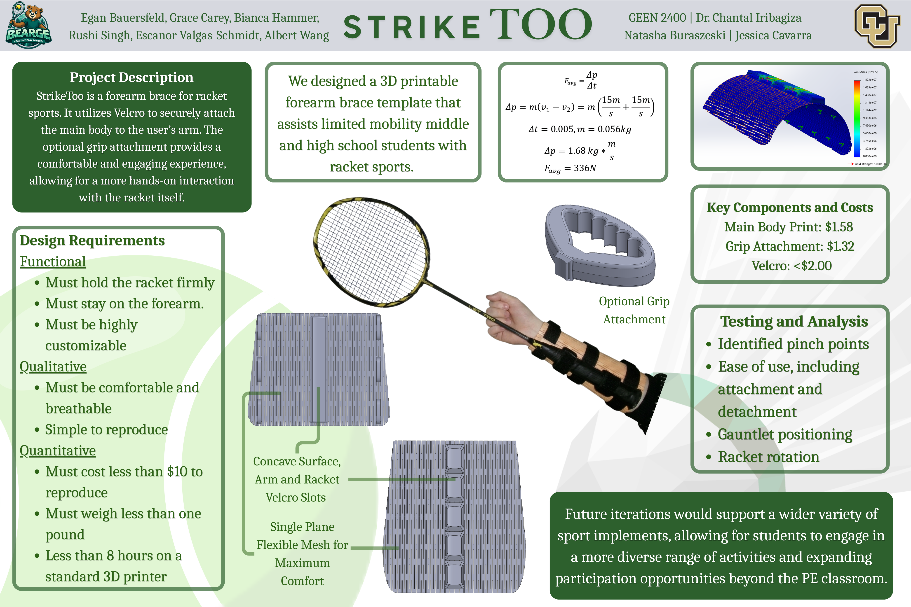
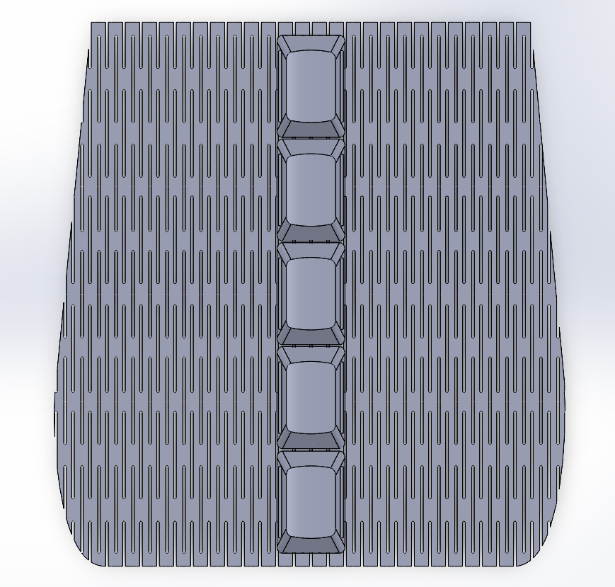

Everything you need to fabricate and assemble the StrikeToo attachment at your school — no engineering background required.

The STL file below is the most current version of the StrikeToo PLA arm plate. It is designed to print with minimal supports using the orientation described in Step 2.
Total print cost is approximately $3.15 in PLA filament. Assembly takes under 5 minutes after the print completes.
Download STLAny standard FDM printer (e.g., Bambu Lab, Prusa, Ender). Build volume of at least 150 × 80 × 60 mm required.
RequiredStandard 1.75 mm PLA. Any brand works. Approximately 40–50 g per unit. No special properties needed.
RequiredHeavy-duty hook-and-loop strip, at least 1 inch wide. Available at any hardware store. Needed for both arm strap and racket attachment.
RequiredBambu Studio, PrusaSlicer, or Ultimaker Cura. Free to download. Used to prepare the STL for printing.
RequiredFor trimming Velcro strips to length and cutting neoprene padding to fit the shell interior.
RequiredFrom download to play in under an hour.
Click the Download STL button at the top of this page to get the latest file. Open your slicer software and import the STL by dragging it into the window or using File → Open.
Orientation is the most critical setting. Place the arm plate flat side down on the print bed — the open channel should face upward. This orientation keeps the Velcro slots clean and eliminates the need for internal supports.
Use the settings below for the best balance of strength, flexibility, and print speed. These have been tested and validated for PLA on a standard FDM printer.
Slice the model and send it to your printer. Estimated print time is 45–70 minutes depending on your printer and speed settings.
Peel away the brim from the base of the print. If printed in the correct orientation, no supports should need removal. Run your finger along the Velcro channels — they should be smooth and clear.
Cut two strips of industrial Velcro to length — one for the arm strap and one for securing the racket handle into the box-and-slot channel. Thread the strap through the printed loops and press the hook side firmly against the loop side to test the hold.
Slide the racket handle into the box-and-slot channel from the open end. Cinch the Velcro strap snugly around the handle. Strap the plate to the student's forearm and adjust until comfortable. The racket should feel like a stable extension of the arm — no grip required.
For students who have some hand function, the grip attachment interfaces directly with the arm plate to provide additional control and feel.

The Grip Attachment V2 is a separate, optional add-on that pairs with the StrikeToo arm plate. It is designed for students who can open their hand but cannot actively grip — the attachment holds the racket handle against the palm without requiring the student to squeeze.
It prints with the same settings as the arm plate and connects via the same Velcro interface, so no additional hardware is needed.
Download Grip Attachment STLIf you run into any problems with the print or assembly, reach out to Team BEARGE directly. We're happy to troubleshoot, send a pre-printed unit, or schedule a time to demonstrate assembly in person.
Contact the Team